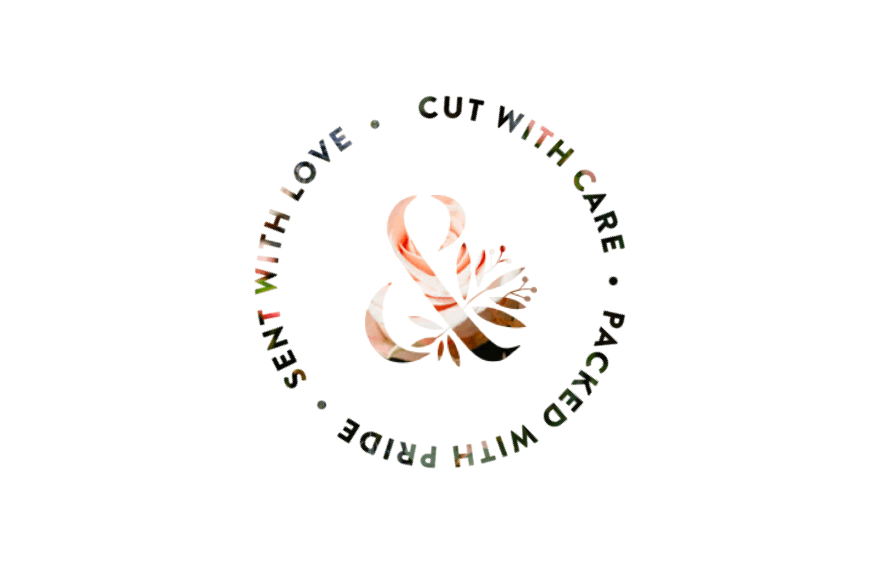
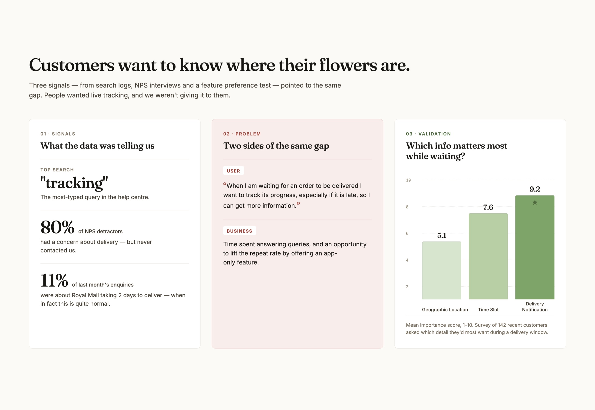
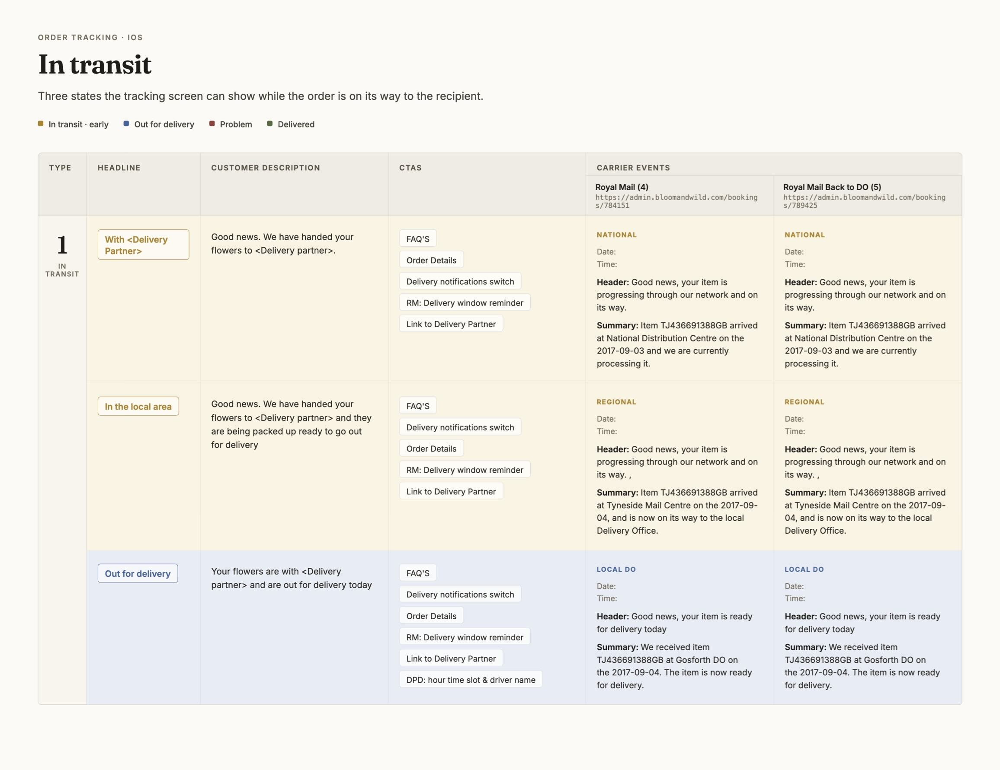
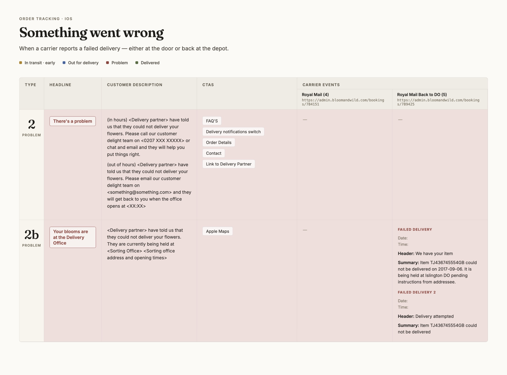
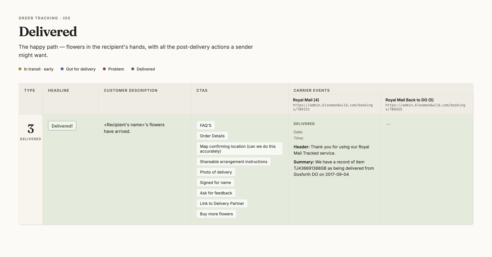
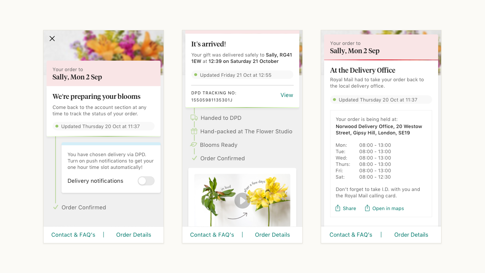
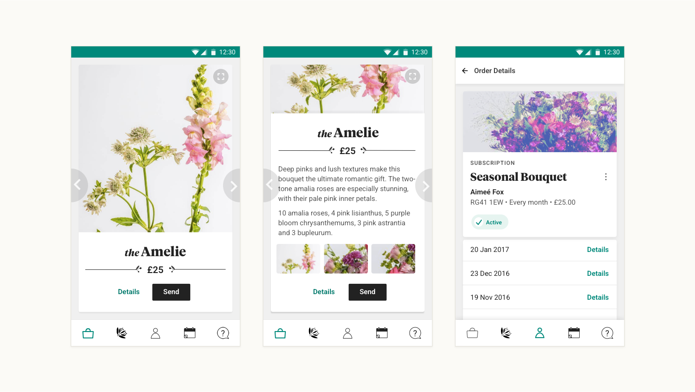

When I joined Bloom & Wild in June 2016 as the founding designer, I was building the design function entirely from scratch.
Over eighteen months, working largely solo, I established user research and testing as core to how the product team operated — and led the redesign of the website, iOS app, Android app, and expansion into three new international markets. Revenue tripled to £13 million.
As the company scaled, delivery anxiety was quietly damaging retention and repeat purchases. Data told a clear story: "tracking" was the top search in the help centre, 80% of NPS detractors had concerns about delivery, and 11% of customer support enquiries were about delivery timelines — a problem better product information could have prevented entirely.
I worked with data and customer delight teams to reframe the opportunity: users needed visibility, and the business needed to reduce support burden whilst driving repeat purchase through an app-exclusive feature. I tested three tracking concepts with users, scoring them on desirability. Delivery notifications scored 9.2, significantly ahead of alternatives.

To deliver this, I mapped every delivery state — from handoff to logistics partner through regional sorting, out for delivery, problem states, failed deliveries, and final delivery — to the exact backend events from our carriers. Every customer-facing headline, description, and call-to-action was tied to real data flowing through the system.



The result was direct: NPS detractors with delivery concerns dropped from 80% to 71%, and support enquiries about delivery fell from 15% to 9%. Removing friction at one of the highest-leverage moments in the customer lifecycle helped drive a 5% increase in repeat rate.

The iOS app redesign earned App of the Year recognition from startups.co.uk in 2017. The Android redesign — built natively for the platform — was featured on the Play Store and drove an 8% uplift in conversion. Adding a shopping basket increased average order value by 7.5%.
